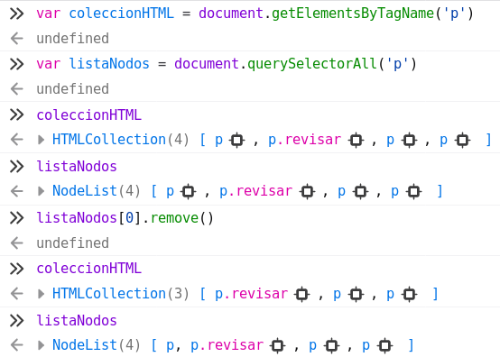

Introducción JavaScript 03 - DOM¶
1. Introducción DOM¶
Puede obtener una aproximación en este enlace W3Schools: JavaScript HTML DOM
El modelo DOM es una herramienta esencial para la manipulación y dinamización de páginas web. A través de JavaScript y la API del DOM, los desarrolladores pueden crear experiencias interactivas sin necesidad de recargar la página, optimizando la usabilidad y la experiencia del usuario.
El Modelo de Objetos del Documento (DOM) es una interfaz de programación que representa la estructura de un documento HTML o XML como un árbol jerárquico de nodos. Cada elemento del documento, como etiquetas, atributos, texto y comentarios, se convierte en un nodo dentro de este árbol, permitiendo que los lenguajes de programación, como JavaScript, accedan y manipulen dinámicamente el contenido y la estructura del documento.
Cuando un navegador carga una página web, analiza el código HTML y lo convierte en una estructura de nodos organizada en un árbol. Cada etiqueta HTML se representa como un nodo, que puede contener otros nodos como elementos hijos o atributos. JavaScript puede acceder y modificar estos nodos a través de métodos y propiedades del API del DOM.
2. Accesos "directos"¶
DOM define algunas propiedades que nos permiten acceder directamente a información y elementos de la página HTML. Entre ellos por ejemplo:
document.URL: devuelve la URL del documento.document.title: devuelve el valor del elemento<title>.document.links: devuelve una colección con todos los elementos con atributohref.document.images: devuelve una colección con todos los elementos<img>del documento.document.forms: devuelve una colección con todos los elementos<form>del documento.document.lastModified: devuelve la hora de modificación del documento.
Tiene un ejemplo de su uso en el fichero dom-001.html y dom-001.js.
3. Acceder a elementos HTML¶
3.1. Acceso con métodos¶
El primer paso para poder añadir elementos, modificarlos, etc. es identificar los elementos a procesar. Para ello se definen métodos para poder acceder a los elementos HTML que cumplan alguna condición: por id, por clase, por etiqueta, etc. Estos métodos devuelven un elemento o una colección de de elementos (HTMLCollection, similar a un array).
Alguno de estos métodos:
getElementById(id)=> retorna un elemento con el id indicadogetElementsByTagName(tag)=> retorna todos los elementos con esa etiqueta, una coleccióngetElementsByClassName(class)=> retorna todos los elementos de esa clase, una colección.
3.2. Acceso al contenido o estilo¶
Y una vez identificado el elemento a procesar podemos acceder a su contenido o estilo con las propiedades:
.textContent: permite acceder al contenido de un elemento HTML (sin etiquetas interiores).innerHTML: permite acceder al contenido de un elemento HTML (incluidas las etiquetas interiores)..style: permite acceder a los estilos CSS de un elemento HTML y modificarlos.
Puede observar el uso de estos métodos y propiedades en los ficheros dom-002.html y dom-002.js. En el fichero HTML se añade un botón al que se le asocia la ejecución del código contenido en la función test(). El resultado se mostrará en consola.
En ese caso observe el uso de un método .getElementsByTagName() que devuelve una colección de elementos y el uso de textContent e innerHTML:
// ejemplo acceso por etiqueta, devuelve colección elementos
var parrafos = document.getElementsByTagName("p");
// mostramos párrafos en consola
// .innerHTML => ver como los párrafos llevan el HTML "interno"
for (let i = 0; i<parrafos.length; i++) {
console.log(parrafos[i].innerHTML);
console.log(parrafos[i].textContent);
}
Y el uso de .style y .getElementById() (que devuelve un único valor):
// acceso por ID: devuelve un único elemento
let contenido = document.getElementById("content");
contenido.style.border = "4px blue double";
3.3. Métodos con selector CSS¶
Hay métodos para identificar elementos HTML que usan como parámetro un selector CSS lo cual proporciona una gran flexibilidad si los sabe utilizar.
querySelector(selectorCSS)=> retorna el primer elemento que cumpla el selector CSS.querySelectorAll(selectorCSS)=> retorna todos los elementos que cumplan el selector CSS.
Vea ejemplos del uso de estos métodos en los ficheros dom-003.html y dom-003.js.
let parrafos = document.querySelectorAll("section p:nth-of-type(odd)");
for (let i = 0; i<parrafos.length; i++) {
parrafos[i].style.color = "red";
}
4. Acceder a los atributos HTML¶
Los atributos de un elemento HTML son convertidos por el navegador en propiedades de un objeto. Para acceder a ellos puede usar los métodos:
.getAttribute(atributo): devuelve como resultado el valor delatributo.setAttribute(atributo, nuevoValor): permite asignarle el valornuevoValoraatributo.
let h1 = document.querySelector("h1");
h1.setAttribute("title", "título generado desde script");
let titulos = document.querySelectorAll("[title]");
for (let i = 0; i< titulos.length; ; i++) {
texto = titulos[i].getAttribute("title");
console.log(texto);
}
4.1. Casos especiales¶
Al acceder directamente a propiedades del DOM sin usar los métodos anteriores el valor retornado no siempre coincide con el valor del atributo HTML.
Es el caso del atributo href de un enlace:
- Si accede a su valor con
.getAttribute(href)se obtiene el valor del atributo HTML (puede ser un enlace relativo) - Si accede con la propiedad DOM
.hrefse obtiene siempre la URL absoluta de ese enlace.
Vea la diferencia en este ejemplo:
let enlaces = document.querySelectorAll("nav a");
for (let i = 0; i < enlaces.length; i++) {
console.log("con href: ", enlaces[i].href);
console.log("con getAttribute: ", enlaces[i].getAttribute("href"));
}
Otro caso particular es el atributo class. Se puede acceder a su valor
- usando los métodos
.setAttribute()y.getAttribute() - usando directamente la propiedad
.className(no se puede usar.classcomo nombre de la propiedad porque es una palabra reservada)
ele.className = “xxx”;
ele.className += “ xxx”;
En los dos casos añadir una clase a un elemento HTML (o eliminarla o comprobarla) no es inmediato ya que el atributo class puede contener varios valores (class="revisar importante actual"). En estas situaciones se usa .classList y sus métodos:
.classList.add(clase).classList.remove(clase).classList.contains(clase)
Ejemplo de su uso:
let h2 = document.querySelector("section h2");
console.log(h2.className);
h2.classList.add("nueva");
console.log(h2.className);
console.log(h2.classList.contains("nueva"));
Tiene todos los ejemplos de uso de atributos en los ficheros dom-004.html y dom-004.js.
5. Estilos¶
Ya se ha comentado que para acceder al valor de una propiedad CSS de un elemento HTML se usa la propiedad style:
element.style.propiedad = "valordelapropiedad";
console.log(element.style.propiedad);
Pero si el nombre de la propiedad CSS tiene un guión se transforma el nombre de la propiedad: se eliminan los guiones y se capitaliza la propiedad usando la notación camelCase. Por ejemplo:
font-size=>fontSize.background-color=>backgroundColorlist-style-type=>listStyleType
Ejemplo de uso:
let h1 = document.querySelector("h1");
h1.style.backgroundColor = "yellow";
h1.style.textDecoration = "underline red 4px double";
Otra forma "indirecta" de cambiar el estilo es usando clases HTML:
- Se define una regla CSS en la hoja de estilos asociada a una clase.
- Se modifica el atributo
classdel elemento para asignarle dicha clase.
Ejemplo de uso:
// usando clases que tengan estilos asociados
let h2 = document.querySelector("section h2");
h2.classList.add("destacar");
Tiene el código de estos ejemplos en los ficheros dom-005.html y dom-005.js.
6. Trabajar con elementos HTML¶
6.1. Añadir un elemento¶
Para añadir un nuevo elemento HTML podemos pensar en tres fases:
-
Primero hay que crearlo con
.createElement()especificando el tipo del elementolet nuevo = document.createElement("p"); -
Posteriormente se le proporciona contenido (y estilos si hiciera falta)
nuevo.textContent = "texto que se añade al elemento"; nuevo.style.color = "blue"; -
Y por último falta decidir dónde insertarlo. Opciones:
-
Antes o después de un cierto elemento (que llamaremos "intermedio" o referencia). Para ello usará
.after(nuevo)o.before(nuevo):intermedio.after(nuevo); intermedio.before(nuevo); -
El primero o el último en un elemento contenedor (que llamaremos "padre"). En este caso usará
.append(nuevo)(último) o.prepend(nuevo)(primero)padre.prepend(nuevo); // añade nuevo como primer hijo padre.append(nuevo) // añade nuevo como último hijo
6.2. Borrar un elemento¶
Para borrar un elemento basta obtener su referencia y aplicarle el método .remove() sin parámetros:
let h2 = document.querySelector("nav h2");
h2.remove();
Tiene el código de estos ejemplos en los ficheros dom-006.html y dom-006.js.
6.3. Mover un elemento¶
Mover es similar al tercer paso de crear un nuevo elemento: sólo necesita la referencia al elemento a mover y dónde quiere moverlo.
7. Eventos¶
Un evento es cualquier acción o suceso que ocurre en una página web y que puede ser detectado y manejado con código JavaScript. Los eventos pueden ser generados por el usuario (clics, teclas presionadas, movimientos del ratón), por el sistema (carga de la página, errores) o por interacciones automáticas.
7.1. Tipos de eventos¶
Los eventos se pueden clasificar en varias categorías según su naturaleza:
- Eventos del mouse:
- click: Se activa cuando el usuario hace clic en un elemento.
- dblclick: Se dispara cuando se hace doble clic en un elemento.
- ...
- Eventos del teclado:
- keydown: Se activa cuando el usuario presiona una tecla.
- keyup: Se dispara cuando el usuario suelta una tecla.
- Eventos de formulario:
- submit: Se activa cuando se envía un formulario.
- change: Se dispara cuando el valor de un campo de entrada cambia.
- focus: Se activa cuando un campo recibe el foco.
- ...
- Eventos de la ventana y del documento:
- load: Se dispara cuando la página o un recurso se ha cargado completamente.
- resize: Se activa cuando se redimensiona la ventana del navegador.
- ...
Tiene una lista de posibles eventos en este enlace de W3Schools: HTML DOM Events.
7.2. Asociar eventos a código javascript¶
7.2.1. Forma 01¶
La forma más sencilla y directa (pero no por ello recomendable) de asociar código a un evento es incluir en el elemento HTML el evento como atributo y el código a ejecutar como valor del atributo:
<elemento evento="códigoJavaScript">
Este podría ser un ejemplo inicial donde al hacer clic sobre el botón se sustituye el texto del párrafo con id="demo" por la fecha actual:
<p id="demo">¿Hora?</p>
<button onclick='getElementById("demo").innerHTML=Date()'>Ver hora 01</button>
Es recomendable crear una función con el código javascript e invocarla en el atributo del evento:
function verHora() {
let demo = document.getElementById("demo");
demo.innerHTML=Date();
demo.style.color="blue";
}
Y el HTML queda
<button onclick="verHora();">Ver hora 02</button>
7.2.2. Forma 02¶
Otra forma de asociar eventos a código es identificar el botón (por ejemplo con un id) en el código HTML, y realizar en el código JavaScript la asociación evento-función. De esa forma en el código HTML no se indica el evento ni hay código JavaScript.
El código HTML queda así:
<button id="ver03">Ver hora 03</button>
Y en el código JavaScript se asocia al evento onclick la función verHora (observe que se asigna ls función sin paréntesis, no se está invocando):
// asocia onclick a verHora
btn = document.getElementById('ver03')
btn.onclick=verHora;
7.2.3. Forma 03: addEventListener¶
Una última posibilidad es utilizar el método .addEventListener() que es la forma que tiene más posibilidades (aunque aquí se mostrará su uso básico).
En esta forma primero se localiza el elemento HTML al que se le asocia el evento, y a la hora de asociar el evento usamos el método .addEventListener() que recibe dos parámetros:
- El evento que se asocia ((observe que en el ejemplo el parámetro es
clicy noonclic). - La función que se asocia al evento.
Lo puede observar en este ejemplo:
var btn = document.getElementById('ver04');
btn.addEventListener("click", verHora);
Observe que el evento no lleva el prefijo on. Tiene el código de estos ejemplos en los ficheros dom-010.html y dom-010.js.
Y más información sobre este método en este enlace W3Schools: HTML DOM Element addEventListener()
7.3. Ejemplo uso eventos y formularios¶
Para validar los campos de un formulario se puede usar el evento onSubmit. Al asociar este evento a una función esta se ejecuta al pulsar el botón de envio del formulario. Si la función devuelve false el formulario no se envía.
Vea un ejemplo de formulario de alta:
- el campo clave se solicita dos veces (inputs
pwd1ypwd2) - se añade el atributo
onsubmiten el formulario que retorna el resultado de la funcióncheckForm()
<form id="form" onsubmit="return checkForm();" action="val.php">
<label>Usuario: <input id="user" type="text" name="user" /></label>
<label>Clave: <input id="pwd1" type="password" name="pwd1"/></label>
<label>Confirma:<input id="pwd2" type="password" name="pwd2"/></label>
<input type="submit" value="Enviar" />
</form>
Y el código de la función de control checkForm que devuelve false si las claves son distintas.
function checkForm() {
var pwd1 = document.getElementById("pwd1");
var pwd2 = document.getElementById("pwd2");
if (pwd1.value != pwd2.value) {
alert("Error: clave y confirmación deben ser iguales");
return false; //si onsubmit devuelve false no se envía formulario
}
return true;
}
Observe que se accede al valor de los
inputsdel formulariopwd1ypwd2con la propiedadvalue.
7.4. Eventos y la palabra reservada this¶
Es frecuente que quiera asociar el mismo evento y función a un conjunto de elementos. Y que la función se aplique sobre el elemento que genera el evento en cada momento.
En este caso la palabra reservada this permite acceder (desde la función asociada al evento) al elemento HTML que ha provocado el evento (y por tanto la ejecución de la función).
Si por ejemplo quiere asociar la función a todos los párrafos de la página HTML debe recorrerlos con un bucle asignando a cada párrafo el evento y una función:
var parrafos = document.querySelectorAll('p');
for (let i = 0; i < parrafos.length; i++) {
parrafos[i].onclick = colorVerde;
// en cada parrafo se asocia evento onclick a función colorVerde
}
Y vea la función colorVerde que cambia el color del elemento que la invoque. Como no está determinado que elemento HTML la invocará se usa la palabra reservada this en la expresión this.style.color = "green";:
function colorVerde() {
this.style.color = "green";
}
Ahora cada vez que haga click sobre un párrafo cambiará el color de dicho párrafo.
8. Anexos¶
8.1. Generar un elemento HTML con hijos¶
El objetivo es crear un elemento HTML que dentro tendrá a su vez elementos HTML hijos. Puede ser por ejemplo una lista y su elementos, o unta tabla con filas, etc.
Tiene varias formas de abordar esta situación. Una de ellas sería:
- Primero se crea el elemento HTML
contenedor - Luego se añade dentro de
contenedorlos hijos (podría ser un bucle) - se crea el elemento HTML
hijo - se le da contenido, estilo, etc.
- se inserta
hijoencontenedor - Finalmente se inserta
contenedoren la página HTML
function creaLista01() {
var lista = document.createElement("ul"); // 1
for (let i = 0; i < 5; i++) {
item = document.createElement("li"); // 2.1
item.textContent = "item " + i; // 2.2
lista.append(item); // 2.3
}
var destino = document.getElementById("resultado");
destino.append(lista); // 3
}
Otra forma de conseguir el mismo objetivo sería:
- Primero se crea el elemento HTML
contenedor - Se genera una cadena o string con todo el contenido de
contenedor(incluyendo las etiquetas HTML de los hijos) - Se añade esa cadena al contenido del
contenedorusandoinnerHTMLya que se incluyen en la cadena etiquetas HTML). - Finalmente se inserta
contenedoren la página HTML.
function creaLista02() {
var destino = document.getElementById("resultado");
var lista = document.createElement("ul");
for (let i = 0; i < 5; i++) {
lista.innerHTML += "<li> item " + i + "</li>";
}
lista.innerHTML += "</ul>";
destino.append(lista);
}
8.2. Eventos, APIs y JSON¶
Vea un ejemplo de consulta a una API desde JavaScript. En este caso se asocia al evento onclick la función generaUsuario().
Esta función hace la consulta a la API usando en la URL como parámetro el valor del input del formulario con id="usuario". Para ello se usa el método .fetch.
La respuesta de la API se convierte a formato JSON y se utiliza para construir una cadena cad. Esa cadena contiene el código HTML de dos filas de un tabla, una con los encabezados y otra con la respuesta de la API. Esta cadena se inserta dentro de una tabla con id tabla1 ya existente en la página HTML:
btn1 = document.querySelector("#busca");
btn1.onclick = generaUsuario;
function generaUsuario() {
usuario = document.querySelector("#usuario");
fetch("https://jsonplaceholder.typicode.com/users/" + usuario.value)
.then((response) => response.json())
.then((response) => {
let cad = "<tr><th>Nombre</th><th>Email</th><th>Teléfono</th></tr>";
cad += `<tr><td>${response.name}</td>
<td>${response.email}</td>
<td>${response.phone}</td></tr>`;
document.getElementById("tabla1").innerHTML = cad;
});
}
Este ejemplo es similar, pero la consulta a la API devuelve una lista de usuarios. Por ello se usa un bucle que va generando tantas filas de la tabla como usuarios:
btn2 = document.querySelector("#lista");
btn2.onclick = generaTabla;
function generaTabla() {
console.log("genera Tabla")
fetch("https://jsonplaceholder.typicode.com/users/")
.then((response) => response.json())
.then((response) => {
let cad = "<tr><th>Nombre</th><th>Email</th><th>Teléfono</th></tr>";
for (let usuario of response) {
cad += `<tr><td>${usuario.name}</td>
<td>${usuario.email}</td>
<td>${usuario.phone}</td></tr>`;
}
document.getElementById("tabla1").innerHTML = cad;
});
}
Tiene el código en los ficheros index.html y app.js de la carpeta json_api. Tiene más detalles del uso de esta API en este enlace: {JSON} Placeholder
8.3. Curiosidad: HTMLCollection vs NodeList¶
Los métodos getElementsByTagName, getElementsByClassName devuelven una colección HTML (HTMLCollection), pero el método querySelectorAll devuelve una lista de nodos (NodeList). De ellos nos interesa que
- Los objetos
NodeListson estáticos. - Los objetos
HTMLCollectionson dinámicos o vivos: se actualizan automáticamente si se modifica el documento.
Hay que tener cuidado al insertar o borrar elementos de un HTMLCollection usando un bucle. Vea en la siguiente captura lo que ocurre al borrar un nodo de un lista: cómo se actualiza la colección HTML y cómo no lo hace la lista de nodos:

Vea ejemplos de funciones que borran en bucle. En el primer caso se recorre siempre borrado el primero para no tener problemas:
function borraColeccion() { // HTML Collection
var lista = document.getElementsByTagName("p");
for (var i = lista.length - 1; i >= 0; i--) {
lista[0].remove();
}
}
function borraLista() { // con NodeList
var lista = document.querySelectorAll("p");
for (var i = 0; i < lista.length; i++) {
lista[i].remove();
}
}
9. Posibles ejercicios¶
- Mostrar cuántas cabeceras de nivel 2 hay en el artículo. De ellas, cuántas tienen una longitud menor de 8, entre 8 y 50 y mayor de 50 caracteres.
- Estilos
- Modificar el color del primer
<li>de cada lista a rojo. - Poner un borde inferior a todos las cabeceras
h2yh3de la página.
- Modificar el color del primer
- Modificar la clase de los
h2para que tengan la claseindice. - Modificar todos los elementos de la clase resumen y añadirle la clase
destacar. - Añadir elementos en una lista
- Al principio de una lista.
- Al final de una lista.
- Antes de un elemento con
id=intermedio.
- Si la página no tiene
footerañadirlo con unh2. - Borrar los elementos de la págiCódigo que al pulsar un botón añade al final de la página una lista con todas las palabras importantes (
strong). - Código que al pulsar un botón crea una lista con las abreviaturas existentes y su significado. Si se vuelve a pulsar el botón y la lista existe la borra.